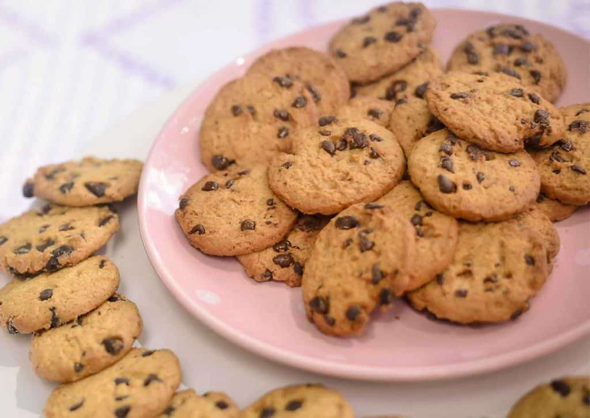

Receita de Cookie

Ingredientes
- 2 1/4 xícaras (280g) de farinha de trigo
- 1/2 colher de chá de bicarbonato de sódio
- 1 xícara (220g) de manteiga sem sal, derretida e resfriada
- 1 xícara (200g) de açúcar mascavo
- 1/2 xícara (100g) de açúcar refinado
- 1 colher de chá de extrato de baunilha
- 1 ovo grande
- 1 gema de ovo
- 2 xícaras (340g) de gotas de chocolate
- 1 pitada de sal
Passos
- Preaqueça o forno a 180°C e prepare uma assadeira com papel manteiga.
- Misture os ingredientes secos em uma tigela.
- Bata a manteiga, os açúcares, os ovos e a baunilha em outra tigela.
- Combine as misturas e adicione as gotas de chocolate.
- Forme bolas, coloque na assadeira e asse por 10-12 minutos.
- Deixe esfriar antes de servir.